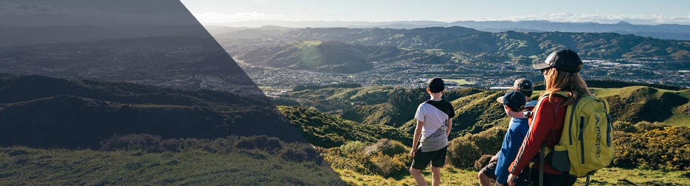
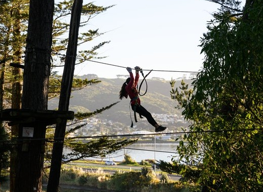

OUTDOOR
ACTIVITIES
TAWA COLLEGE
EOTC HUB


Outdoor Activities

RANGITUHI WALK
A private bus will drop students at the start of the Rangituhi walkway. Teachers will help students navigate the path to the lookout and then up to the summit of Rangituhi.
From here students will traverse the tops and then pop down into Te Ngahere o Tawa.
Students will spend more time on the walk learning about reading maps, trees and leaves, local places of interest from viewpoints etc.
There is also a $50 prezzy card as a prize for activities students can complete on the way.

ADRENALINE FOREST + MINIGOLF
Meeting time and location:
Tawa Train station at 8.15am underneath the pedestrian overbridge.
What to bring:
A day pack with your lunch, water bottle, sun hat, a warm jumper and rain jacket (if the weather forecast is bad), togs and a towel.
Please wear appropriate sports clothes for climbing. No denim please! Bring any medication required.
Students will meet at Tawa Train station where the roll will be taken.
Please gather with your form class for the roll and if you are running late, you must find a teacher and let them know you have arrived.
Students will catch the 8.28am train to Porirua and then walk as a group to Adrenalin Forest.
We need to catch this earlier train to ensure we start climbing on time.
If Students absolutely cannot make this train (as I realise that it is before the start of school time) there will be one teacher waiting at the train station for any late students and they will catch the 8.48am train.
This is an absolute back up and is only an option for those that cannot possibly make it earlier. These students will be late for the start of the climbing and will not get their full 3 hours.
If your whanau lives in Porirua and Students will meet us at Adrenalin Forest, please wait at the entrance to Adrenalin Forest and let a teacher know when the group gets there so we can update the roll and let school know you are in our care.
After a safety briefing students have 3 hours to climb and test yourselves. After having some lunch we will leave Adrenalin Forest and walk to Pirate's Cove Minigolf.
If you indicated on the permission form that Students can leave by themselves directly from the pool as they live in the local area, they will be dismissed from here at around 2.15pm.
The rest of the group will walk back to Porirua station and catch the 2.39pm train back to Tawa Station where they will be dismissed.
If you indicated on the permission form that Students can leave by themselves directly from the pool as they live in the local area, they will be dismissed from here at around 2.15pm.
The rest of the group will walk back to Porirua station and catch the 2.39pm train back to Tawa Station where they will be dismissed.